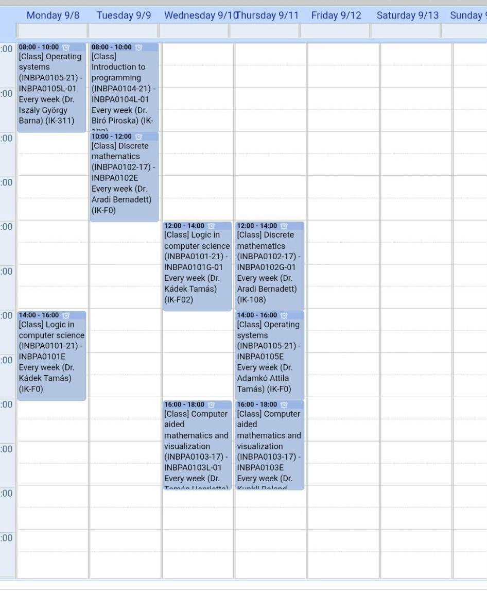
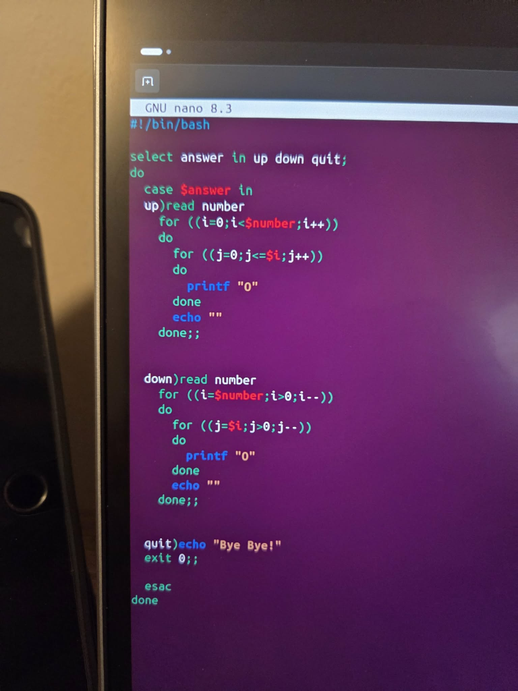
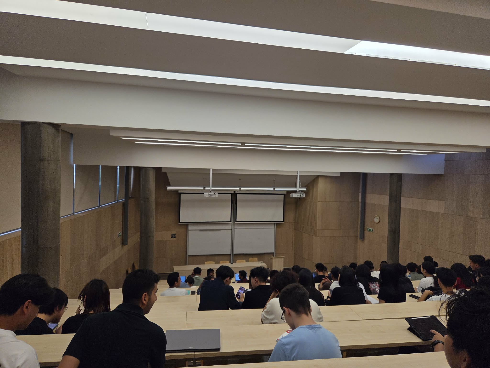
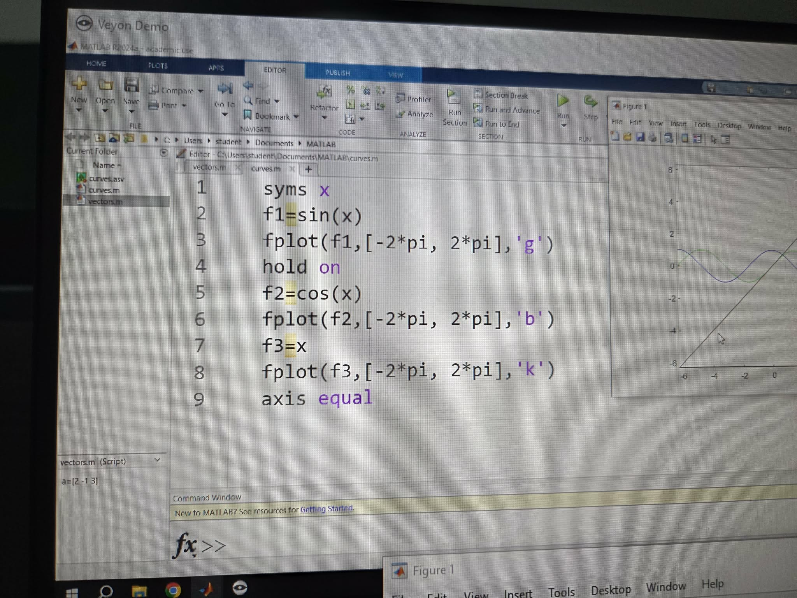
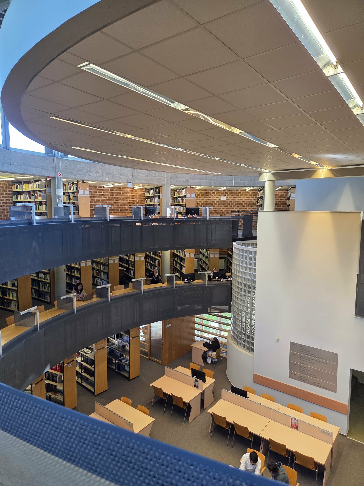
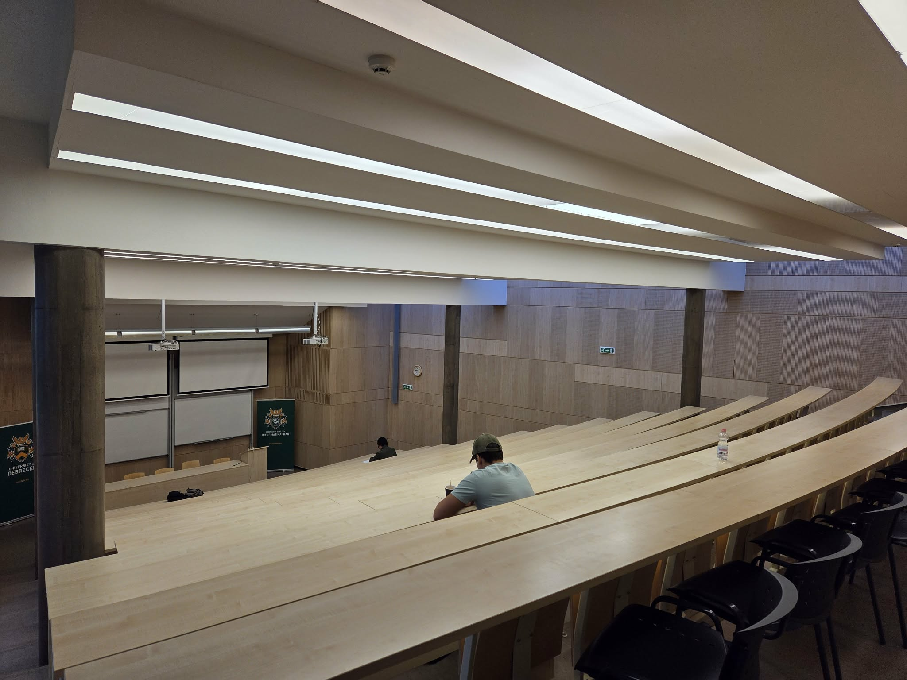

デブレツェン大生の日常（1年前期編）
みなさんこんにちは。
ハンガリー留学ラボのユウゴです。
今回は「デブレツェン大生の日常（1年前期編）」について書いてみます。
あくまで私の日常なので、他の現役生の日常が気になる方は、ぜひ面談もよろしくお願いします！
今期の時間割
今期の時間割は以下の通りです。

月曜日
今期の月曜日は授業が2コマありました。
1限と4限に授業があり、この間は家に帰ったり、大学に残って図書館で勉強したりしていました。
デブレツェン大学では、授業間で昼休みとして少し長く時間を取られたりはせず、授業間は20分で固定です。そのため、授業が連続するとあまりゆっくりすることはできません。
1限の授業では、下の写真のようにLinux環境でターミナルを使っていろいろやりました。
始めのうちはかなり難しかったですが、後半でちゃんと勉強する時間をとったことで、なんとか試験にパスすることができました。

4限の授業は、以下の写真のように大教室で話を聞く系の授業で、集合論や論理式などを扱いました。
ほとんど数学なので、高校の数Aがわかっていればなんとかなりました。

火曜日
火曜日も2コマです。
月曜とは違い、授業が連続なので午前中にすべて終わります。そのため、午後からはかなりゆっくりできて、好きなことができたので好きでした。
1限の授業ではPythonの基本的なことを学びました。
完全初心者でしたが、友人の協力もあり、なんとか理解でき、後半はかなり余裕を持つことができました。
2限目は完全に数学の授業です。
日本の高校の内容が8割だったので特に問題はなかったですが、「日本語ではわかるけど英語だとわからない」ということが多くありました。そのため、都度インプットしていく必要がありました。
水曜日
水曜日も2コマです。
水曜からは授業が午後からなので、朝をゆっくり過ごせたため、個人的にかなり楽でした。
1コマ目は月曜の4限と同じ授業です。
大講堂ではなく、少人数で小さめの教室で月曜の内容を詳しく扱いました。教授との距離も近いので、質問や発表もしやすくてよかったです。
2コマ目は、数学的な知識を使ってグラフや図形を描いてみる授業です。以下の写真のように、ベクトルや関数式を入力してグラフや図形を作ります。

授業の間は2時間しかないので、基本的には図書館で前の授業の小テスト対策や、前日のプログラミングの授業の宿題をしたりしていました。

木曜日
木曜は3コマです。
すべて連続なのでしんどかったですが、これが終われば休みなので頑張れました。水曜同様、午後からのスタートなので朝は10時くらいまで寝ていました。
1コマ目は火曜日の2コマ目の少人数版です。火曜日の内容を詳しく扱いました。
前述通り、ほとんどが日本の高校範囲なので、授業中の発表なども結構できました。
2コマ目は月曜1限の大人数バージョンです。
OSについて詳しく扱いましたが、正直これが一番難しくてよくわかりませんでした。内容がそもそも難しいのに加えて、教授が話すのも早く、ついていけないことがほとんどでした。ここで一気に疲れがどっと来ます。
3コマ目は水曜の2コマ目の大人数バージョンです。
この授業の教授は授業開始から20分くらいしないと来ないので、それまで友達と外でずっと話していました。この授業は可もなく不可もなくといった感じでした。
この授業は試験がなかったので、出席する生徒も少なく、ある時には、下の写真の大教室で僕含めて5人で受けていたこともあります。

金曜日〜日曜日
僕は運が良く、1回生前期から全休があって三連休でした。
これはかなり嬉しかったです。慣れない生活の中で毎週三連休だったのは、精神的にもかなりよかったですし、テスト前なども勉強する時間が多く取れて助かりました。
僕は基本的に家でNetflixを見たり、日本の友達とゲームをしたりしてしまっていました。
今振り返ると、かなりもったいないことをしたなと後悔しています。もっと現地の友達と遊びに行ったり、カフェに行ったりすればよかったです。
まとめ
いかがでしたでしょうか。
今回は私の1年前期の1週間について書いてみました。
学校から帰ると基本的にはすぐにシャワーに入り、ご飯を食べていました。
毎日0時くらいには寝ていたので、ご飯を食べた後は基本的にYouTubeを見たり、少しだけ復習をしたりして、すぐに寝てしまっていました。
基本的に同じルーティンを繰り返していただけなので面白みはないかもしれませんが、少しでもリアルな生活が伝われば嬉しいです。